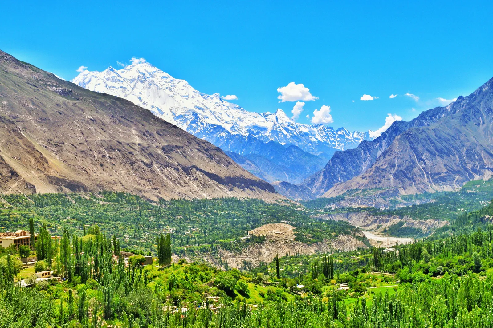

Hunza Valley is known for dramatic peaks, terraced settlements, historic forts and road-trip scenery. Three days can introduce you to the central valley and a selection of nearby sights, but distances, weather and road conditions matter. Use this itinerary as a framework and adjust it to your arrival point and pace.
What to see and how to plan
- 1
Day 1: Arrive and explore Karimabad
Keep the first day gentle after the drive. Walk around Karimabad, enjoy views when the weather is clear and sample local food. If time and opening hours allow, visit Baltit Fort or arrange it for the next morning.
- 2
Day 2: Heritage and nearby villages
Spend time at Baltit Fort and Altit Fort, checking current visitor access before you go. These sites help explain the region’s history and traditional architecture. Leave time to wander respectfully through village lanes and ask before photographing people.
- 3
Day 3: Attabad Lake and Passu region
If road conditions and your base make it practical, travel toward Attabad Lake and the Passu area. The journey offers scenic stops, but do not underestimate driving time or attempt too many detours in one day.
- 4
Choose accommodation by route
Staying around Karimabad suits many first-time visitors, while a different base may make sense for a longer journey. Compare location, heating, access, cancellation terms and what the price includes.
- 5
Make room for weather
Cloud cover can hide mountain views, and rain or road works can change plans. Keep one flexible block in your schedule rather than booking every hour.
- 6
Taste local food
Try regional dishes and apricot-based products from reputable local businesses. Ask about ingredients and prices before ordering unfamiliar items.
- 7
Travel respectfully
Dress appropriately for local settings, ask permission for portraits and avoid entering private fields or homes without an invitation.
- 8
Prepare for the road
Long-distance routes can be tiring. Check vehicle condition, fuel, rest stops and current road advisories, and avoid night driving on unfamiliar mountain roads.
- 9
Pack for temperature changes
Bring layers, sun protection, rainwear and comfortable walking shoes even if the forecast looks warm.
- 10
Keep the plan flexible
If you only have two full days, prioritize central Hunza and one excursion instead of trying to cover the entire region.
Practical travel tips
- Confirm current road conditions before heading toward Attabad Lake or Passu.
- Ask each accommodation to confirm the exact room, meals and cancellation terms.
- Carry cash and download maps for areas with unreliable mobile service.
- Treat estimated drive times as approximate in mountain terrain.
Explore with Past Enlighten
Ask about route options, dates and what is included. Confirm the price and itinerary in writing before you book.
Continue planning
Travel conditions, access, schedules and prices can change. Confirm current details locally before departure.